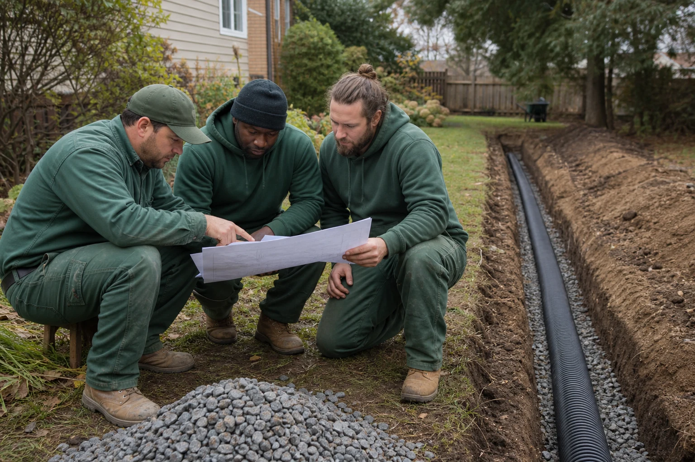
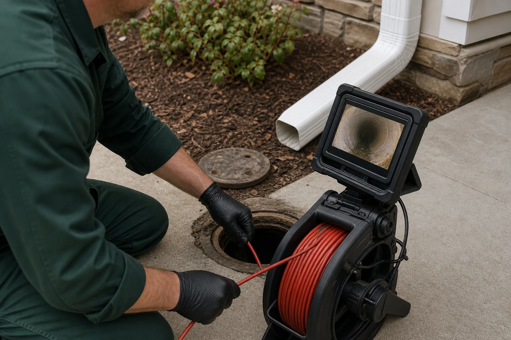
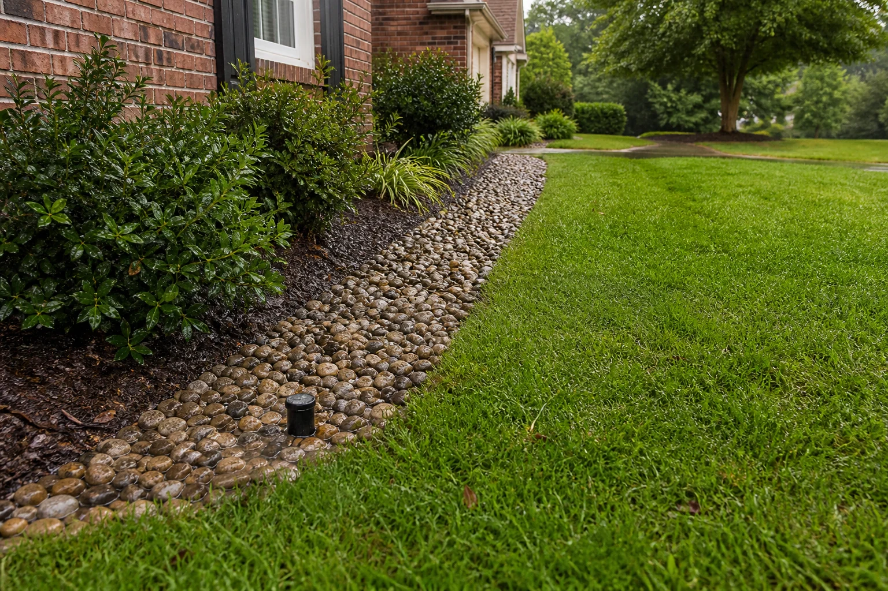

Accountability
The work stays with our own crew from assessment through cleanup.

Clear drains. Better living.
A licensed, fully insured, in-house crew focused on one thing: moving water away from the places it can do damage.

Our approach
We assess the property, explain what is causing the water problem, and provide a free written estimate. Every project stays with our in-house team—no subcontractors and no handoffs.
With more than 20 years of drainage experience, we build systems around the grade, soil, runoff, and foundation conditions that make each property different.
What guides the work
Clear communication and drainage systems built for real storms—not temporary cosmetic fixes.
The work stays with our own crew from assessment through cleanup.
You receive a written estimate and a practical explanation before work begins.
Pipe size, slope, aggregate, outlet, and grading are selected for lasting performance.
We plan around your home, landscaping, schedule, and access needs.
Our satisfaction guarantee and material warranty support the completed system.
Built for confidence
Professional preparation, accurate diagnosis, and long-term materials combine to protect your property.

More than 20 years of field experience applied by the people who actually complete the installation.

Drain lines, downspouts, grading, and discharge points are inspected before a solution is recommended.

A 20-year material warranty and satisfaction guarantee support systems built to keep working.
Tell us what you are seeing and get a free written drainage estimate.